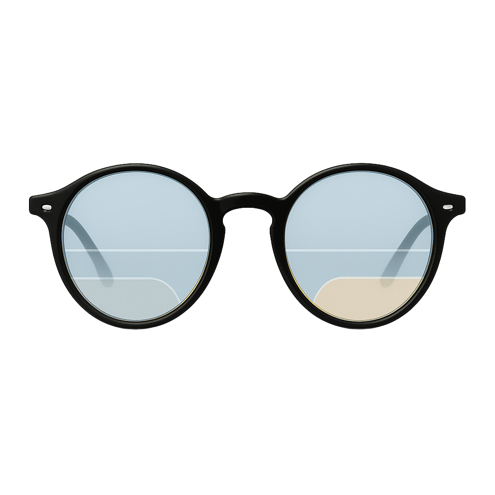

Lentes Multifocais
As lentes multifocais permitem uma visão confortável e progressiva em todas as distâncias, sem a divisão visível das lentes bifocais.
Benefícios das Lentes Multifocais:
- Transição suave entre diferentes distâncias
- Ideal para quem precisa de correção para todas as distâncias
- Design moderno e discreto